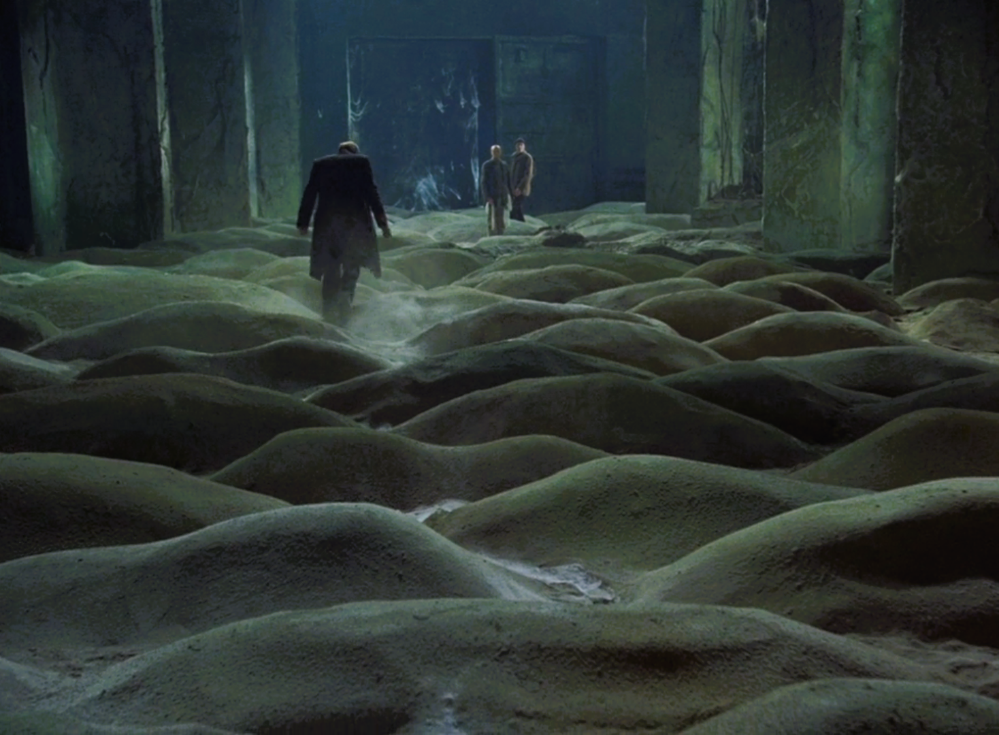

Stalker(1979): Movie Review
Image from Stalker (1979)
Yesterday, I watched Stalker (1979), directed by Andrei Tarkovsky. It was my second film from this director after watching Mirror (1975), and I would say both films are excellent. They take time to understand, and sometimes they won't make immediate sense and that's perfectly fine.
Talking about Stalker: it follows the journey of three men: the Professor, the Writer, and, of course, the Stalker. Each one unique in their own ways, just like any human being. This cinematic journey is filled with philosophical conversations and draws the audience into the mystery of the Room inside the Zone.
I won't give many spoilers, but I want to emphasize that in an era dominated by fast-paced action and CGI, films like this feel very different. The long takes continue without interruption and immerse you in the film's space-time complexity, making you feel as if you're not watching a movie but witnessing events unfold in real life.
The film questions our desires and what we truly want from the world. I also think this movie isn't for everyone, and not everyone will understand or appreciate it and that's alright. Still, I would recommend watching it either way.